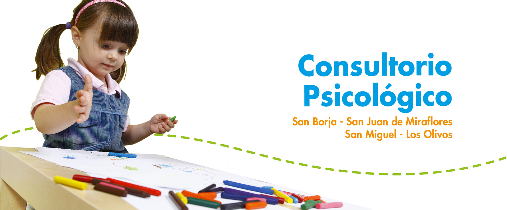

- 
Nos enfocamos en el desarrollo de hábitos de trabajo intelectual y de criterios de selección, de forma que todas las áreas contribuyan al desarrollo de aptitudes y funciones mentales propias de cada persona. Es por ello que nuestros estudiantes son capaces de distinguir lo importante de lo trivial, lo permanente de lo transitorio y lo real de lo aparente, en una búsqueda constante de la Verdad.